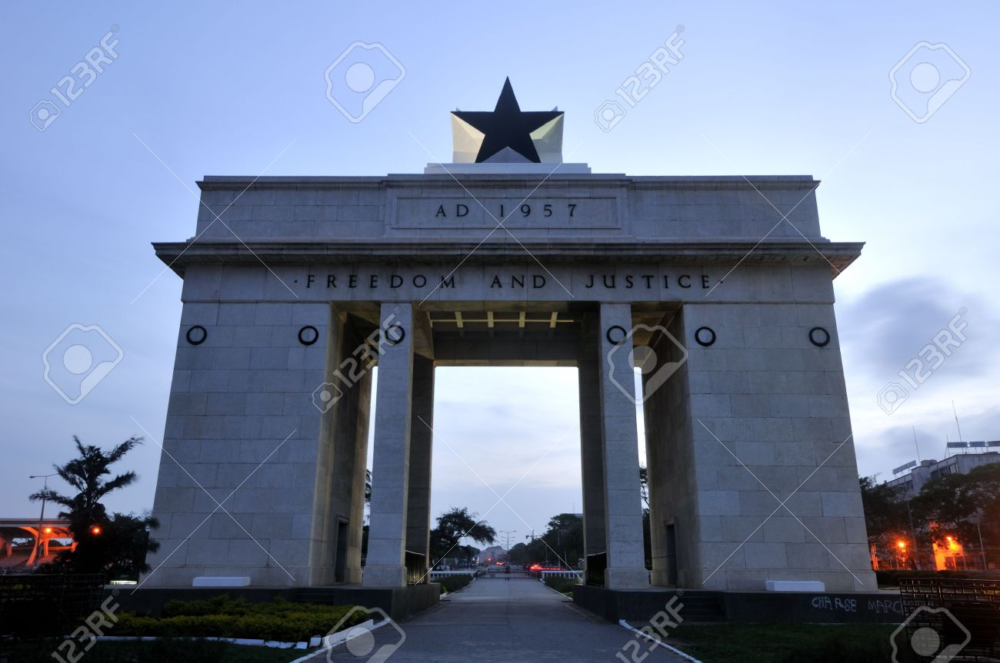
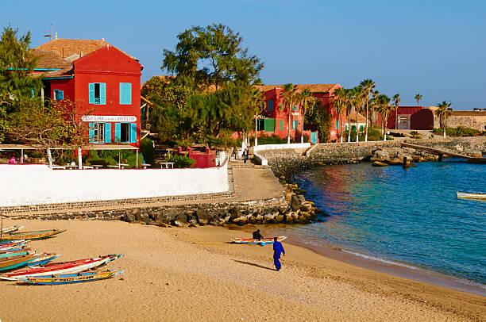
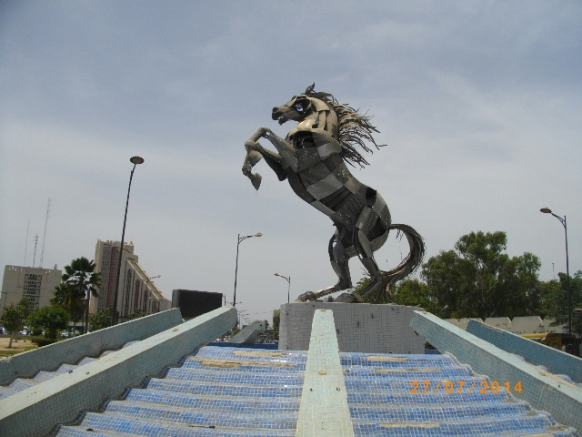
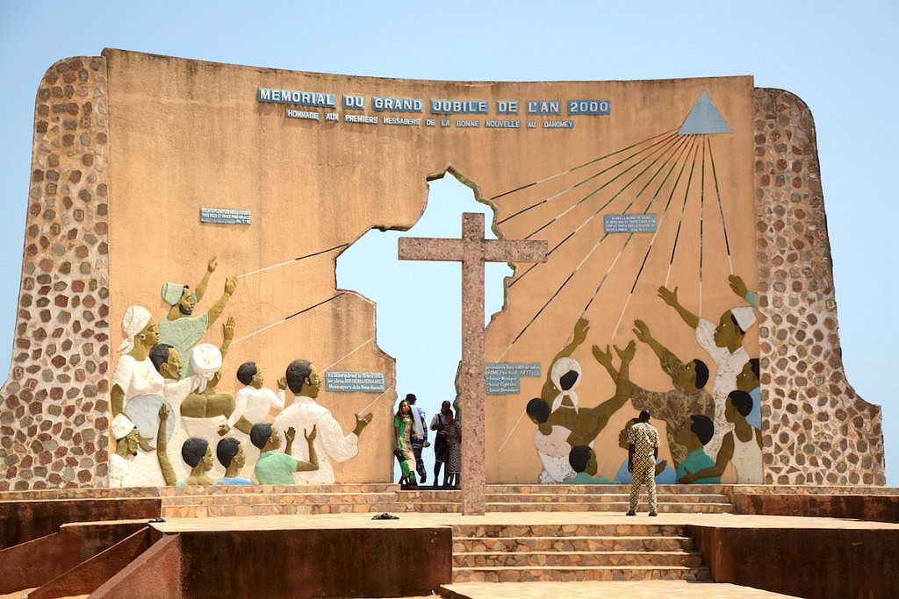

Pour decouvrir les merveilleux du TOGO,
Cliquer Ici
Pour decouvrir les merveilleux du TOGO,
Cliquer Ici
 Pour voir pour quoi le GHANA est un pays a visiter a tout prix, Cliquer Ici
 SENEGAL est l'un des pays africains que les gens veulent visiter, Clique Ici
 Pour visiter le MAROC, Cliquer Ici
 Pour voir les merveilles du BENIN, Cliquer Ici